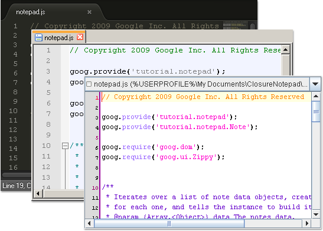

Integration with Editors and IDEs
Closure FX Builder is integrated with the most common editors and IDEs for JavaScript development. If the editor which you uses is configured, you can immediately open the issued Warnings and Errors in the current editor by one action.
-
Currently the tool is integrated with:
- WebStorm (Windows, Unix, Mac OS)
- Notepad++ (Windows)
- Komodo Edit (Windows, Unix, Mac OS)
- Sublime Text (Windows, Unix, Mac OS)
- Emacs (Windows, Unix, Mac OS)
- jEdit (Windows, Unix, Mac OS)
- TextMate (Mac OS)
If your favorite editor is not in the list above, please submit Enhancement request.
Configure an Editor
-
Click
 Settings button to open Closure FX
Preferences dialog.
Settings button to open Closure FX
Preferences dialog.
-
Select Editors tab.
- Click Browse... button for one of the available editors.
-
Choose the installation directory (Windows, Unix) or
application file (Mac OS) of the editor.
For example:
on Windows: /Applications/Sublime Text 2.app
on Unix: /home/john/Sublime Text 2
on Windows: C:/Program Files/Sublime Text 2
-
Click Mark as Default radiobox
to use the chosen editor by default.
- Click Apply button to save.
Using an Editor
- Run your Build Configuration and go to the Console tab.
-
If the compiler finds problems, just double-click a
warning or an error to inspect the code in your favorite editor.
 -
Right-click a warning or an error to choose other editors
from the context menu.
Installation Path Examples
-
WebStorm
- on Windows: C:/Program Files/JetBrains/WebStorm 6.0.1
- on Unix: /home/john/WebStorm
- on Mac OS: /Applications/WebStorm.app
-
Komodo Edit
- on Windows: C:/Program Files/Komodo Edit
- on Unix: /home/john/Komodo Edit
- on Mac OS: /Applications/Komodo Edit.app
-
Notepad++
- on Windows: C:/Program Files/Notepad++
-
Sublime Text
- on Windows: C:/Program Files/Sublime Text 2
- on Unix: /home/john/Sublime Text 2
- on Mac OS: /Applications/Sublime Text 2.app
-
Emacs
- on Windows: C:/Program Files/emacs-24.3
- on Unix: /home/john/emacs-24.3
- on Mac OS: /Applications/Emacs.app
-
TextMate
- on Mac OS: /Applications/TextMate.app
-
jEdit
- on Windows: C:/Program Files/jEdit
- on Unix: /home/john/jEdit
- on Mac OS: /Applications/jEdit.app